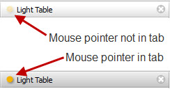
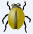
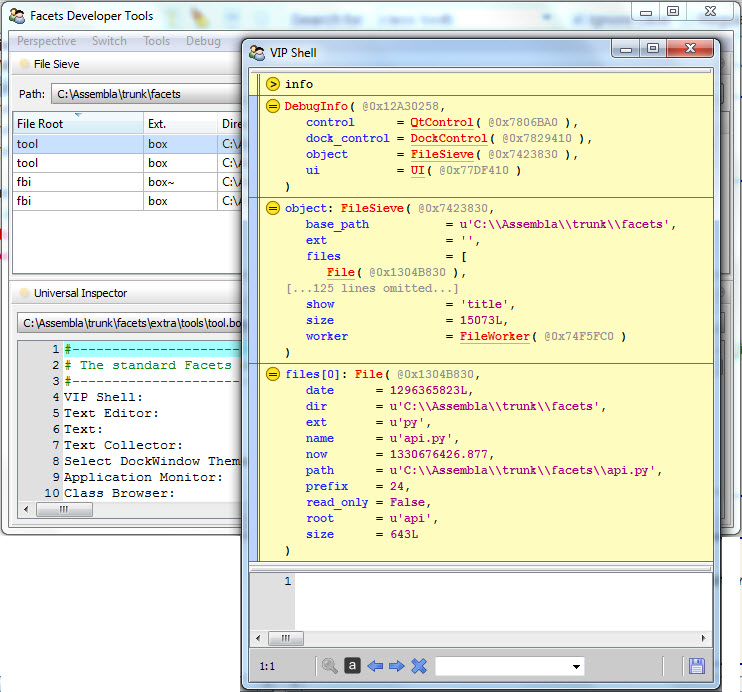
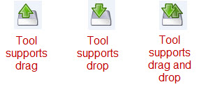
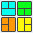

The centerpiece of the tool framework architecture is the concept of a feature. A feature is an extension mechanism that imbues a tool that supports the feature with new capabilities and facilities. A tool can support any number of features at the same time.
Features work within a context that allows all tools operating within the context to exchange information via their associated features. In the case of the tool framework, the context is provided by a DockWindow. A DockWindow is the Facets component that manages collections of controls, allowing you to visually organize and resize them as needed. When used in the tool framework, a DockWindow manages collections of tools. In addition, it manages a collection of features. As new tools are added, the DockWindow creates feature instances for each feature supported by the tool.
The visual indication that a tool supports one or more features is provided by the feature icon appearing to the left of the tool’s label in its DockWindow tab. The icon has different appearances and shapes, depending upon the current state of the tool, mouse pointer and feature environment. Normally the icon appears ghosted, but as the mouse pointer moves into its tab, the icon becomes fully opaque, as shown in the following screen shots:
The feature icon serves several purposes:
Some features require user interaction in order to use the feature. In such cases the tool can provide an icon to facilitate the interaction. The set of all feature provided icons for a given tool is collected together into a single feature toolbar that appears when the mouse pointer hovers over the feature icon on the tool’s DockWindows tab. An example of a feature toolbar is shown in the following screen shot:
..image:: images/tool_feature_toolbar.jpg
In this example we see four different icons, each contributed by a different feature associated with the tool.
The feature provided icon can support different types of user interaction, such as:
A particular icon may support more than one style of interaction. For example, in the previous screenshot, the leftmost chain link icon supports clicking to display a popup menu as well as clicking and dragging to perform an action. The style, or styles, of interaction supported is normally indicated by the icon’s tooltip.
The mechanism a tool uses to indicate that it supports a particular feature is to attach feature specific metadata to one or more facets defined by the tool.
When a tool is added to a DockWindow, the DockWindow notifies each feature in the DockWindow’s context that a new tool is being added. Each feature class then uses standard Facets metadata queries to determine if the tool supports the feature. If it does, the feature class typically creates one or more instances of itself and returns them to the DockWindow, which adds them to the list of other features supported by the tool. If the feature does not find any facets containing metadata it recognizes, then it returns None to the DockWindow, signifying that the tool does not support the feature.
Not all features rely on metadata to determine whether or not a given tool supports the feature, but many do and in the following sections we’ll explicitly describe the metadata a tool needs to define in order to support the feature.
The Facets package includes a number of predefined features used by the various tools included in the package and which you can also use when creating your own tools.
The standard features are:
Allows tools with compatible connect metadata to be connected together. For more information on using this feature within the tools environment, refer to the Using the Tools Environment section, which describes the user interface for this feature in more detail.
To use this feature when creating a tool, simply add connect metadata to any facet that can be connected as an input or output to another tool. The value of the connect metadata is a string describing the type of connection that can be made, and has the form: direction[:[:]name], where:
The direction of the connection. It can be one of the following values:
If the direction is to, then the facet can be only be connected to another tool’s facet that has a direction of from or both. If the direction is from, then it can be connected only to a tool facet with a direction of to or both. And finally, a direction of both means that it can be connected to any compatible tool facet (i.e. direction of to, from or both).
Note the in addition to having a compatible direction, a facet can only be connected to tool facets with a compatible type. If no explicit type information is specified in the connect metadata, then the facet can only be connected to another facet which is assignment compatible. That is, the value of a from facet must be a legal value for the to facet.
If explicit type information is specified (e.g. connect = ‘to::image_file’), then the facet can only be connected to another facet with identical type information (e.g. connect = ‘from:image_file’). Using explicit type information can help eliminate false positives on facets which are assignment compatible, but should not logically be connected together. Note that the type information is only a string that must match the connecting facet’s type information, not an actual data type.
If a descriptive name is supplied (e.g. connect = ‘to: image’), the name is used in the tools environment user interface to describe to the user what types of connections can be made. Typically the name appears when a user clicks on the connect feature icon and a popup menu describing what connections can be made or broken is displayed and there is more than one possible connection that can be made or broken to a particular tool. In this case, the name is used to help differentiate the different facets involved (e.g. Connect to the image of the Image Zoomer). Note that the name is only used in cases where more than one facet is involved. For example, if the connection in the previous example was unambiguous, it would be displayed as: Connect to the Image Zoomer.
If no descriptive name is provided (e.g. *connect = ‘to’), the name of the facet is used to create the descriptive name for the user interface. For example, if a tool includes the definition:
image = Image( connect = 'to' )
then image is used in the connect feature user interface to describe any connection to the facet. So in cases where a facet’s name is descriptive, it is not necessary to provide a descriptive name in the connect metadata.
Adds a debugging icon to each tool’s feature toolbar that allows the developer to view different types of information about the current state of the tool. The default icon added to the toolbar looks like:
Once this feature is added, it applies to all tools. Normally, this feature is only available once it has been enabled by checking the Debug option in the Feature section of a DockWindow’s context menu displayed by right clicking on any DockWindow surface such as a tab or splitter bar.
The debug icon supports all of the following actions:
Displays a popup VIPShell view which displays a DebugInfo object containing the following information:
As an example of using the debug feature, the following screen shot shows the results of clicking the File Sieve tool’s debug icon to display a VIPShell view with information about the tool:
Assigns the DockControl object associated with a tool to any facet of the tool with dock_control metadata. This feature has no user interface.
The purpose of this feature is to give tools access to the tools environment they are operating in by providing them with a link to the DockControl object they are bound to. The DockControl object in turn can provide links to the other DockControl objects, tools and features operating within the same DockWindow context.
To use this feature, simply assign dock_control = True metadata to one or more facets in a tool. For example:
class MyTool ( Tool ):
...
dc = Instance( DockControl, dock_control = True )
...
The feature will then automatically assign the tool’s DockControl object as the value of any such facet when the tool is added to the tools environment.
Adds an icon to a tool’s feature toolbar that allows a user to drag or drop objects on the tool using the icon. The icon added to the toolbar looks like:
The particular icon displayed depends upon whether the tools supports dragging objects, dropping objects or both.
In order to support dragging, define draggable metadata on any facet containing an object that can be dragged. If the value of the metadata is a string, the string is used as the tooltip describing the object being dragged when the user hovers the mouse pointer over the feature icon.
More than one facet can contain draggable metadata. If there are multiple facet values that can be dragged, they are combined into a MultiDragDrop object when the user drags the feature icon. If a particular draggable facet has a value of None at the time the drag operation begins, it is not included in the drag.
If multiple draggable facets have string metadata, the string values are combined when creating the icon’s tooltip. If no draggable facet has string valued metadata, then the tooltip simply says Drag this item..
In a similar manner, define droppable metadata on any facet that accepts dropped objects. As with draggable facets, string metadata values are used to define the tooltip displayed for the feature icon. If no droppable facet has string metadata, the tooltip simply says Drop an item here..
When objects are being dragged over the feature icon for a tool with droppable facets, the feature determines whether the object can be dropped on the tool by validating the object against the droppable facets. If at least one facet can accept the object being dragged, the drag operation is allowed to proceed.
If multiple objects are being dragged (i.e. in the case of another tool being dragged that creates a MultiDragDrop object), then at least one of the droppable facets must accept at least one of the dragged objects in order for the drag operation to proceed.
When a valid object (or objects) or dropped on the tool, the feature attempts to assign each dropped object to each droppable facet. Any errors raised by failed assignments are ignored.
If the tool defines both draggable and droppable facets, the icon tooltip is defined by grouping and merging together the tooltips for the draggable and droppable facets.
Adds an icon to each tool’s feature toolbar that allows the user to rearrange all of the tools contained in the perspective by selecting from a palette of standard layouts. The icon added to the toolbar looks like:
Once this feature is added, it applies to all tools. However the icon only appears in a tool’s feature toolbar if there is more than one tool in the perspective, since there is nothing to lay out in the case of a single tool.
The palette of layouts that appears when the toolbar icon is clicked looks something like:
The actual palette displayed is context sensitive and depends upon the number of tools currently in the perspective.
Adds an icon to a tool’s feature toolbar that displays the tool’s options dialog when clicked. The icon added to the toolbar looks like:
In order to use this feature, the tool must define a View called options. This is the view displayed when the user clicks the options icon on the tool’s feature toolbar.
Adds an icon to a tool’s feature toolbar that allows the user to save the current state of the tool. The icon added to the toolbar looks like:
In order to use this feature, the tool must be a subclass of the Saveable class, which can be imported from facets.extra.api and is defined in facets.extra.helper.saveable. Saveable is a subclass of HasPrivateFacet that defines a needs_save Boolean facet and an abstract save method which has no arguments and returns no result.
The tool should set needs_save to True whenever the tool has modified state the user has the option of saving. Once needs_save is set to True, the save icon appears on the tool’s feature toolbar. If nneds_save* is False, the save icon is not displayed.
When the user clicks the save icon, the feature calls the tool’s save method, which should take whatever action is required to save the tool’s state. Once saved, the tool should reset needs_save back to False.
Automatically saves the state of any tool’s facets that have save_state metadata specified. This is useful for saving user preference information across sessions.
The feature automatically saves the value of any tool facet with save_state metadata set to True. Previously saved values are automatically restored the next time the tool is loaded. In addition, if the tool has a single string valued facet with save_state_id metadata set to True, the value of the facet is used as the key for saving the tool’s state data in the Facets user interface database. If no such facet is found, the state data is saved under a key of the form: unknown.plugins.name.state, where name is the tool’s name.
Of course you are not limited to using just the features provided with the Facets package. You can also create and use your own features when defining new tools. There are four steps involved in creating and using custom features:
In the remainder of this section we’ll be covering the details of creating your own feature by subclassing DockWindowFeature.
The DockWindowFeature class defines the following facets:
The DockWindowFeature class defines the following instance methods:
Handles the user left-clicking on a feature image.
This method is designed to be overridden by subclasses. The default implementation attempts to perform a quick drag operation (see the quick_drag method). Returns nothing.
Handles the user right-clicking on a feature image.
This method is designed to be overridden by subclasses. The default implementation attempts to perform a quick drag operation (see the quick_right_drag method). Returns nothing. Typically, you would override this method to display the feature’s shortcut menu.
Returns the object to be dragged when the user drags a feature image.
This method can be overridden by subclasses. If dragging is supported by the feature, then the method returns the object to be dragged; otherwise it returns None. The default implementation returns None.
Returns the object to be dragged when the user drags a feature image while pressing the Control key.
This method is designed to be overridden by subclasses. If control-dragging is supported by the feature, then the method returns the object to be dragged; otherwise it returns None. The default implementation returns None.
Returns the object to be dragged when the user drags a feature image while pressing the Shift key.
This method is designed to be overridden by subclasses. If shift-dragging is supported by the feature, then the method returns the object to be dragged; otherwise it returns None. The default implementation returns None.
Returns the object to be dragged when the user drags a feature image while pressing the Alt key.
This method is designed to be overridden by subclasses. If Alt-dragging is supported by the feature, then the method returns the object to be dragged; otherwise it returns None. The default implementation returns None.
Returns the object to be dragged when the user right mouse button drags a feature image.
This method can be overridden by subclasses. If right dragging is supported by the feature, then the method returns the object to be dragged; otherwise it returns None. The default implementation returns None.
Returns the object to be dragged when the user right mouse button drags a feature image while pressing the Control key.
This method is designed to be overridden by subclasses. If right control-dragging is supported by the feature, then the method returns the object to be dragged; otherwise it returns None. The default implementation returns None.
Returns the object to be dragged when the user right mouse button drags a feature image while pressing the Shift key.
This method is designed to be overridden by subclasses. If right shift-dragging is supported by the feature, then the method returns the object to be dragged; otherwise it returns None. The default implementation returns None.
Returns the object to be dragged when the user right mouse button drags a feature image while pressing the Alt key.
This method is designed to be overridden by subclasses. If right Alt-dragging is supported by the feature, then the method returns the object to be dragged; otherwise it returns None. The default implementation returns None.
Handles the user dropping a specified object on a feature image. Object specifies the object being dropped onto the feature image. It returns nothing.
This method is designed to be overridden by subclasses. It is called whenever the user drops an object on the feature’s tab or drag bar image. This method is called only if a previous call to can_drop() for the same object returned True. The default implementation does nothing.
Returns whether a specified object can be dropped on a feature image. Object specifies the object being dragged onto the feature image. It returns True if object is a valid object for the feature to process ,and False otherwise.
This method is designed to be overridden by subclasses. It is called whenever the user drags an icon over the feature’s tab or drag bar image. The method does not perform any processing on object; it only examines it. Processing of the object occurs in the drop() method, which is called when the user releases the object over the feature’s image, which typically occurs after the can_drop() method has indicated that the feature can process the object by returning True. The default implementation returns False, indicating that the feature does not accept any objects for dropping.
Performs any clean-up needed when the feature is removed from its associated application component (for example, when the user disables the feature).
This method is designed to be overridden by subclasses. The method performs any clean-up actions needed by the feature, such as closing files, removing facet listeners, and so on. The method does not return a result. The default implementation does nothing.
Displays the popup shortcut menu specified by menu, which should be a facets.ui.menu.Menu object. It returns nothing.
This helper method displays the shortcut menu specified by menu at a point near the feature’s current (x,y) value, as specified by the x and y facets. Normally, the (x,y) value contains the screen location where the user clicked on the feature’s tab or drag bar image. The effect is that the menu is displayed near the feature’s icon, with the pointer directly over the top menu option.
Disables or enables the feature, depending upon the value of disable. If disable is True (the default), the feature is disabled; otherwise it is enabled. It returns nothing.
This helper method temporarily disables the feature for the associated application component. The feature can be re-enabled by calling the enable() method (or by calling disable again with the disable argument set to False). Disabling the feature removes the feature’s icon from the feature bar without actually deleting the feature (i.e., the dispose() method is not called).
Enables or disables the feature, depending upon the value of enable. If enable is True (the default), the feature is enabled; otherwise it is disabled. It returns nothing.
This helper method re-enables a previously disabled feature for its associated application component. Enabling a feature restores the feature bar icon that the feature displayed at the time it was disabled.
The DockWindowFeature class defines the following class methods which are called by the DockWindow when an application component is being added:
Returns a single new feature object or list of new feature objects for the DockControl object specified by dock_control. dock_control corresponds to the application component being added or for which the feature is being enabled.
The method should return an instance or list of instances of this class to associate with the application component. Alternatively, None can be returned if the feature does not apply to the application component.
This class method is designed to be overridden by subclasses. Normally, a feature class determines whether it applies to an application component by examining the component to see if it is an instance of a certain class, supports a specified interface, or has facet attributes with certain types of metadata. The application component being added is available through the dock_control.object facet attribute. Note that it is possible for dock_control.object to be None if the DockControl is not associated with an application object.
The default implementation for this method calls the is_feature_for() class method to determine whether the feature applies to the specified DockControl. If it does apply, it calls the new_feature class method to create the feature instances to be returned. If it does not apply, it simply returns None.
Returns a new feature instance for the DockControl specified by dock_control. dock_control corresponds to the application component being added or for which the feature is being enabled.
The method should return an instance or list of instances of this class to associate with the application component. If the feature does not apply to the application component, None should be returned.
This method is designed to be overridden by subclasses. The method is called by the default implementation of the feature_for class method to create the feature instances to associate with the application component specified by dock_control. The default implementation returns the result of calling the class constructor as follows:
return cls( dock_control = dock_control )
where cls is the feature class.
Returns whether this class is a valid feature for the application object corresponding to the DockControl specified by dock_control.
The method should return True if the feature applies to the application object associated with dock_control and False otherwise.
This class method is designed to be overridden by subclasses. It is called by the default implementation of the feature_for class method to determine whether the feature applies to the application object specified by dock_control. The default implementation always returns True.
There are several class-level variables that are also available for use:
An integer that specifies the current state of the feature:
You do not usually need to set this value explicitly. The DockWindows code normally manages the value automatically, setting it when the user enables or disables the feature.
To illustrate a working feature class implementation, we present an edited version of the source code for the standard Options feature, which allows the user to display the options dialog for any tool defining a view called options:
from facets.core_api import HasFacets
from facets.api import View
from facets.ui.dock.api import DockWindowFeature
from facets.ui.pyface.image_resource import ImageResource
class OptionsFeature ( DockWindowFeature ):
# Class Constants:
# The user interface name of the feature:
feature_name = 'Options'
# Facet Definitions:
# The current image to display on the feature bar:
image = ImageResource( 'options_feature' )
# The tooltip to display when the mouse is hovering over the image:
tooltip = 'Click to set view options.'
# Event Handlers:
def click ( self ):
""" Handles the user left clicking on the feature image.
"""
dc = self.dock_control
object = dc.object
view = object.facet_view( 'options' )
sx, sy = dc.owner.control.screen_position
bx, by, bdx, bdy = dc.drag_bounds
view.popup_bounds = ( bx + sx, by + sy, bdx, bdy )
self.dock_control.object.edit_facets(
view = view,
kind = 'popup'
)
# Overridable Class Methods:
@classmethod
def is_feature_for ( self, dock_control ):
""" Returns whether or not the DockWindowFeature is a valid feature
for a specified DockControl.
"""
object = dock_control.object
return (isinstance( object, HasFacets ) and
isinstance( object.facet_view( 'options' ), View ))
This simple feature overrides the is_feature_for class method to indicate that the feature only applies to application object’s that derive from HasFacets and which have a View called options defined.
It also overrides the click handler for the feature’s toolbar icon to display the tool’s options dialog whenever the icon is clicked. The dialog is displayed as a popup dialog that appears directly under the tool’s tab.
There are also several additional lines of code used to:
For other examples of DockWindowFeature subclasses, refer to any of the modules with names of the form xxx_feature.py in the facets.extra.features package.
In order for a tool to use a feature, the Facets run-time environnment must first be notified that the feature is available.
There are two ways to do this:
To make all standard Facets features available, use the add_standard_features function:
from facets.extra.features.api import add_standard_features
add_standard_features()
This makes all standard Facets features available in all DockWindow contexts. Note that this function is automatically called by the tool function.
To add a single, specific feature, use the add_feature function:
from facets.ui.dock.api import add_feature
add_feature( feature_class )
where feature_class is the DockWindowFeature subclass defining the feature to be added. It is not an error to call add_feature with the same feature class more than once.
Note that the add_standard_features function is simply a convenience function that invokes add_feature once for each of the standard Facets feature classes.
If you opt not to use the tool function, but instead create your own custom view containing one or more tools and don’t see the feature icon displayed in any of their tabs, chances are good that you forgot to add the necessary features to the run-time environment prior to creating the view.